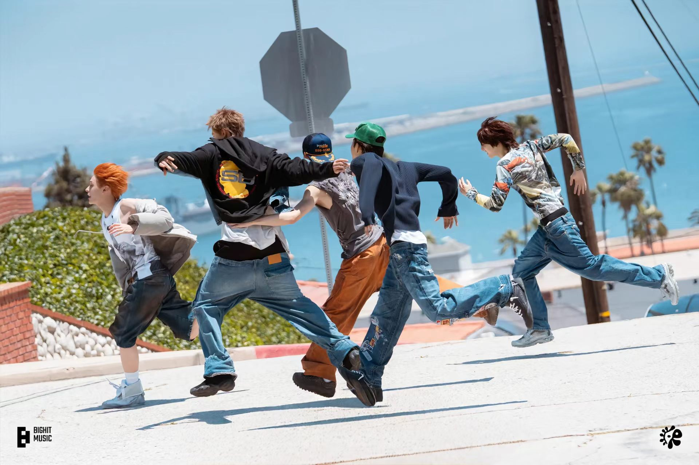

CORTIS：在线条之外上色的少年
五只画笔
- MARTIN：加拿大韩裔队长，出道前就参与过大量前辈们歌曲创作，承担队内歌曲制作。
如太阳般的笑容与一米九的身高总是第一时间抓住人们的眼球。有着强大的歌曲创造力与对时尚的独特理解，炽热锋芒的外表下是真诚细腻的内心！
- JAMES（赵雨凡）：中泰混血，天才级别的编舞能力为该团体以及前辈团队编出火爆的团队作品舞蹈。
精致锋利的外表给人以国际化与时尚前卫的感觉。赵雨凡用丰富多元的阅历，以沉稳担当的性格扛起团队重任。常年跨地域的生活积淀让他熟练掌握中英韩泰日五门语言。天赋之外，他的勤勉更是贯穿始终——深耕跆拳道多年成功斩获黑带段位，常年坚持曲棍球、篮球等运动训练，日复一日的体能锤炼，塑造出他挺拔舒展的舞台体态，也练就了超强专注力与舞台抗压能力。
逐梦路上，赵雨凡从未停下前行的脚步。早年的他曾为知名艺人伴舞，在顶级舞台的实战历练中积累经验、打磨台风，沉淀出成熟稳健的舞台表现力。正式成为练习生后，他不断突破自我边界，主动深耕音乐创作与编舞领域，
- JUHOON（金主训）：韩国人，童模出身，他有着日系清爽风，自带有日系少年浓郁气质的清透感。不同于早早深耕艺能领域的其他成员，他是最后一位加入cortis的成员，被问及原因说“人生就这一次，不如活的有趣一点。” 后来凭借仅仅一年时间快速学习舞蹈唱歌技能快速更上队友步伐、融入团队。常年面对镜头的经历锤炼出与生俱来的绝佳镜头感与自然松弛的舞台掌控力；曾投身青少年足球赛场，在肆意奔跑与竞技拼搏中练就永不言弃的坚韧品性；同时也是管弦乐团在册团员，长久的艺术熏陶，滋养出他细腻通透的内心与独特出众的审美格局。
更偏向于孜孜不倦的学习者，Martin说，他从未见过学习能力这么强的人，他看似性格淡淡的，但是对于想要完成的艺术效果的“要”的劲劲的感觉，就像一座覆盖着皑皑积雪的火山一样。
- SEONGHYEON（严成玹）：韩国人,九岁生日当天被星探意外发现，为懵懂的少年推开了通往舞台与音乐世界的大门。他潜心沉淀、默默蓄力三年成为一名正式练习生。
声乐打磨气息、说唱雕琢咬字、舞蹈精进细节，全年无休的全方位训练，让他在公司每月严苛的考核测评中始终稳居上位。
- KEONHO（安乾镐）：韩国人，队内忙内，活力满格，一开口就能点燃全场。
他对于艺术创作的态度是流动的，正如他自己所说，他在刚开始并不确定艺术创作对他来说意味着什么，反而是环境对他的影响更大。当他感受到团队的团结，感受到身边人创作的热情，他自然而然去创作，而又因为自己天赋的加持，创作出的东西往往非常灵动，当他在艺术创作中获得了正向反馈的时候，他就真正爱上了创作。
六种底色
- C — Cohesive（默契联结的）：舞台上精准接住队友的每个动线，练习室里为一个动作磨合到深夜，五个人的力量拧成一股绳。
- O — Original（风格独特的）：不困于传统男团的框架，赛博朋克装置、暗黑系编舞，连私服都各有腔调却又和谐统一。
- R — Radiant（光芒四射的）：马丁的创作天赋、雨凡的清新少年气、主训的舞台爆发力、成玹的细腻歌声、乾镐的灵动活力，聚在一起时星光加倍。
- T — Tenacious（坚韧执着的）：有人因基础薄弱反复加练，有人因创作瓶颈彻夜难眠，却没有一人想过放弃。
- I — Irreplaceable（无可替代的）：是深夜 Demo 里藏着的温柔，是笑容里的治愈，是五个人在一起时那份旁人无法复刻的羁绊。
- S — Sincere（真挚热忱的）：把真心捧给粉丝和彼此，让 CORTIS 不只是团名，更是一份双向奔赴的约定。
铺开画布
cortis出道三个月并且平均年龄只有17岁的男团。看了他们的纪录片就会发现，他们对音乐的喜欢程度真的超乎想象，也会发现他们有使不完的力气，仿佛自己置身于其中一样。看到了少年们的真心，我曾经也幻想过青春期可以有这样的场景出现在生命中，烟花，落日和一群一起追逐梦想且热烈的朋友们，长大以后也可以反复咀嚼和想起。他们清醒，努力，有追求，有梦想，有想法，有强大的内核，敢行动，从不缺从头再来的勇气，是真正“在做事情”的人，同时有对未来充满憧憬。在他们身上，我真切看见了自己穷尽心力向往的模样：是毫无束缚的自由，是滚烫炽热的热烈。
他们的自由从不是漫无目的的放纵，是在表达上不迎合、不妥协，把真实的生活写进歌里，哪怕带着棱角也依旧坦荡。而那份热烈更让人动容，是舞台上挥汗如雨时眼里的光，是面对质疑时依旧坚定前行的勇气，是对待粉丝时毫无保留的真诚，是对音乐始终纯粹又执着的热爱。这份自由让我想起风穿过旷野的坦荡，这份热烈让我感受到心脏跳动的鲜活。
五位少年，五种底色。没有谁是谁的陪衬，分开时各自撑起一个完整的小世界，聚在一起却撞出了世间最动人的化学反应。不像工业流水线上复刻出来的模板偶像——他们身上有棱角，有锋芒，有野性，有"我就是我"的底气。所有的亲密都自然发生，所有的陪伴都无需设计。真诚这件事，装不出来。
正如团名所含寓意：“Colors Outside The
Lines"——挣脱线稿，不被定义。五种斑斓的灵魂拒绝被框进同一个模具，肆意生长，自由交汇，最终绘成一幅仅此一幅、无可复刻的耀眼盛景。
去看原作
